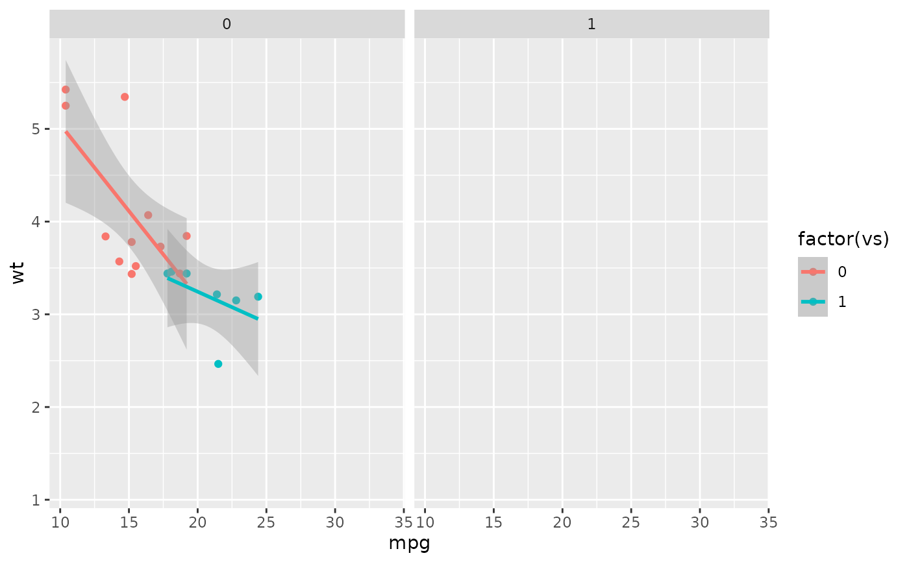
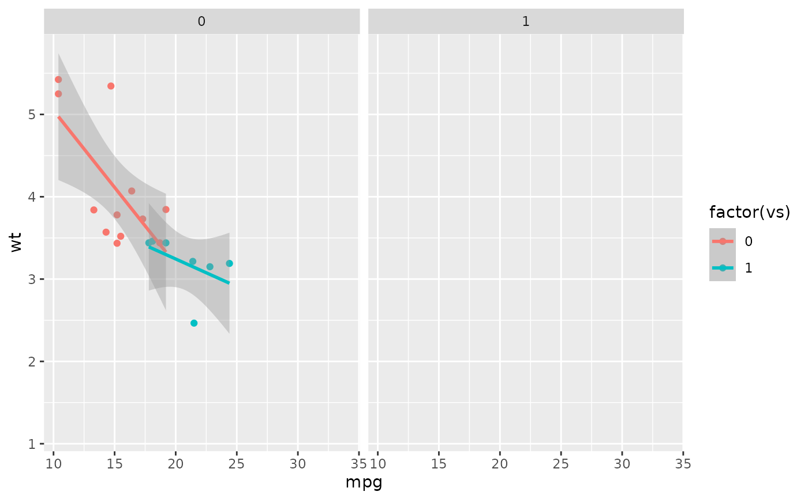
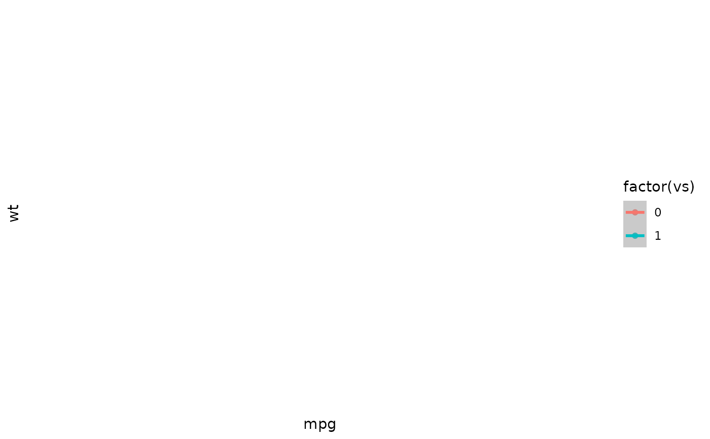
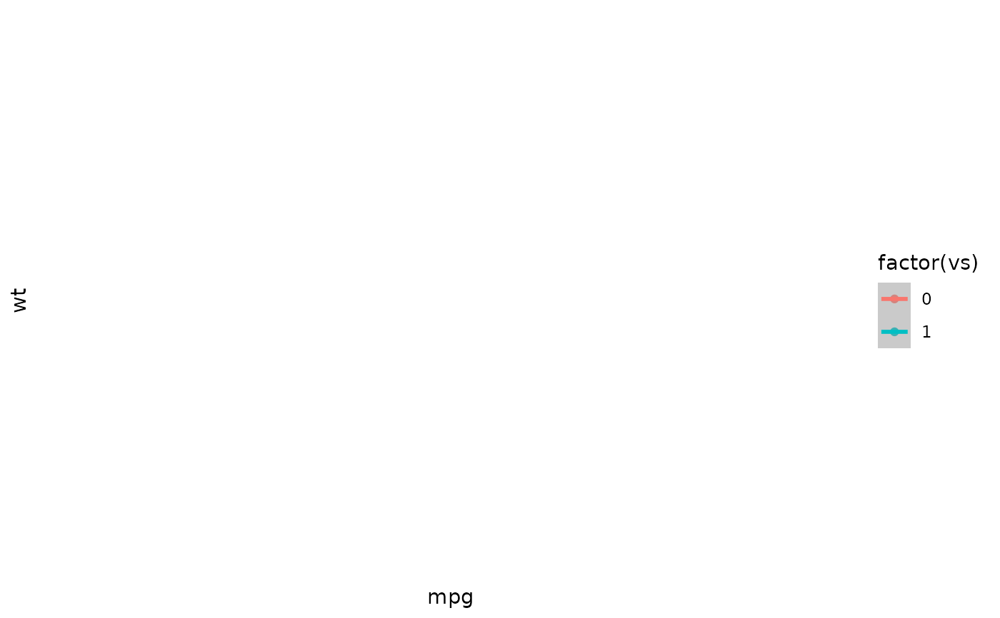

Turns a ggplot into a list of plots, showing data incrementally by panels.
Usage
reveal_panels(p, order = NULL, what = c("data", "everything"))Arguments
- p
A ggplot2 object
- order
(optional) A numeric vector specifying in which order to reveal the panels
For example, if there are three panels in the plot,
order = c(3, 2, 1)will invert the order in which they are revealed.Any panel not included in the vector will be omitted from the incremental plots. E.g.: with
order = c(3, 1), the second panel is not shown.By default, the first plot is blank, showing layout elements (title, legends, axes, etc) but no data. To omit the blank plot, include
-1: e.g.order = c(-1, 3, 1), ororder = -1.- what
(optional) one of
"data"or"everything".' With"data"(the default), the basic graph layout, including axes and facet labels, is shown from the start, and only the data points are shown incrementally. With"everything", the entire panels are shown incrementally.
Value
A list of ggplot2 objects, which can be passed to reveal_save()
Examples
# Create full plot
library(ggplot2)
data("mtcars")
p <- ggplot(mtcars, aes(mpg, wt,
color = factor(vs),
group = factor(vs))) +
geom_point() +
geom_smooth(method="lm",
formula = 'y ~ x',
linewidth=1) +
facet_wrap(~am)
p
 # Only data
plot_list <- reveal_panels(p, what = "data")
plot_list[[1]]
plot_list[[2]]

plot_list[[3]]
# Only data
plot_list <- reveal_panels(p, what = "data")
plot_list[[1]]
plot_list[[2]]

plot_list[[3]]
 # Everything
plot_list <- reveal_panels(p, what = "everything")
plot_list[[1]]

plot_list[[2]]
plot_list[[3]]
# Everything
plot_list <- reveal_panels(p, what = "everything")
plot_list[[1]]

plot_list[[2]]
plot_list[[3]]
 # Save plots
reveal_save(plot_list, "myplot.png", width = 8, height = 4, path = tempdir())
#>
#> ── Saving incremental plots ──
#>
#> ✔ /tmp/RtmpRjqXG9/myplot_0.png
#> ✔ /tmp/RtmpRjqXG9/myplot_1.png
#> ✔ /tmp/RtmpRjqXG9/myplot_2_last.png
# Clean temp files
file.remove(list.files(path = tempdir(), pattern = "myplot", full.names = TRUE))
#> [1] TRUE TRUE TRUE
# Save plots
reveal_save(plot_list, "myplot.png", width = 8, height = 4, path = tempdir())
#>
#> ── Saving incremental plots ──
#>
#> ✔ /tmp/RtmpRjqXG9/myplot_0.png
#> ✔ /tmp/RtmpRjqXG9/myplot_1.png
#> ✔ /tmp/RtmpRjqXG9/myplot_2_last.png
# Clean temp files
file.remove(list.files(path = tempdir(), pattern = "myplot", full.names = TRUE))
#> [1] TRUE TRUE TRUE